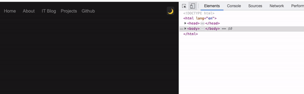
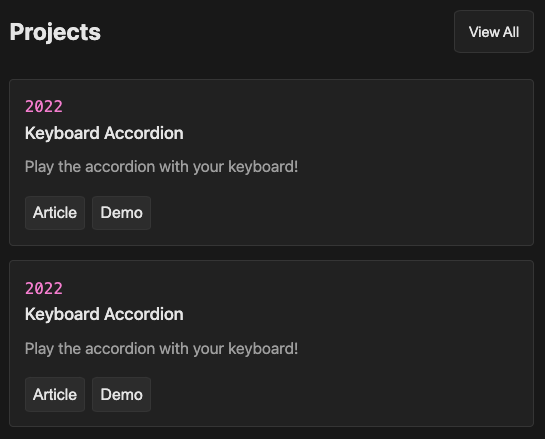
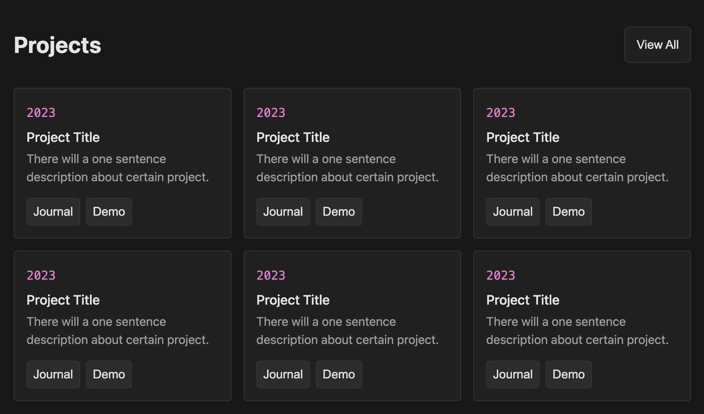

16/04/2023 (Sunday) - First day of creating portfolio website - Folder
Structure & website variables
Today I finally start creating my own personal website. That will be my
long-term project. Website that will showcase my skills, experience,
projects and overall commitment for programming and improving my life
overall.
I will start off by making sure that the folder structure is adjusted to
my needs. Here is the project structure I will start with:
portfolio-website/
│ index.html
│
├───about/
│ about.html
│
├───it-journal/
│ │ it-journal.html
│ │
│ └───html-css/
│ html-css.html
│
├───personal-journal/
│ personal-journal.html
│
├───css/
│ main.css
│ (other CSS files)
│
├───js/
│ main.js
│ (other JavaScript files)
│
└───assets/
├───images/
(image files)
17/04/2023 (Monday) - Building a Responsive Navigation
Today, I started working on a responsive navigation for my website. For
screens smaller than 700px wide, I designed a simple yet aesthetic
navigation menu with five sections: Home, About, IT Blog, Projects, and
Github. These sections are aligned to the left side of the panel. On the
right side, I added a moon icon that serves as a toggle button. In the
future, this button will enable users to switch the website's color
scheme between day and night modes.
For larger screens, I created an expanded version of the navigation. My
name is displayed at the top of the navigation and will act as a link to
the homepage in the future, so I removed the Home section from the menu.
The moon icon remains the same but is slightly larger to accommodate the
larger screen size.

18/04/2023 (Tuesday) - Developing the "About Me" Section
Today, I made a progress on my website by creating a responsive "About
Me" section that appears right after the navigation panel. This section
serves as an introduction to my portfolio website and journal. I've also
included an image of a Jiu-Jitsu white belt. The idea is to update this
image as I achieve higher belt rankings – for instance, when I earn my
blue belt next year, I'll update the image accordingly. Check out the
demonstration of the page's responsiveness below.

19/04/2023 (Wednesday) - Building the "Latest Posts" Section
Today, I developed a section dedicated to showcasing my latest journal
entries. Each entry in the "Latest Posts" section will display the title
and creation date of the corresponding post. For example, the title
"Creating the 'Latest Posts' Section" would appear along with its date.
I also added a small icon to the left of the date, helping to visually
differentiate the types of work or projects I've been involved in on a
specific day. In the future, I plan to retrieve this data from an API
connected to an AWS database. This way, I won't have to manually update
the content on a daily basis, streamlining the process and making it
more efficient.

20/04/2023 (Thursday) - Building the "Projects" Section
Today, my coding time was limited due to work and taking care of my
5-year-old niece. However, I managed to create a section that showcases
my recent projects throughout my career. Each project will feature its
unique creation year, title, a brief description, and two buttons
linking to the project's journal entries, detailing my daily progress,
and a demo of the project. Below is the final visualization of the
section, displaying two containers in a small resolution (optimized for
smartphones).

21/04/2023 (Friday) - Adding responsiveness to the Projects section
Today, I successfully added responsiveness to my Projects section. To
achieve this, I used 'display: grid' to create three columns of project
containers in each row when the screen width reaches 700 px. Now,
whenever a new project is added, the section automatically places it in
a new row after there are already three projects in the previous row.
